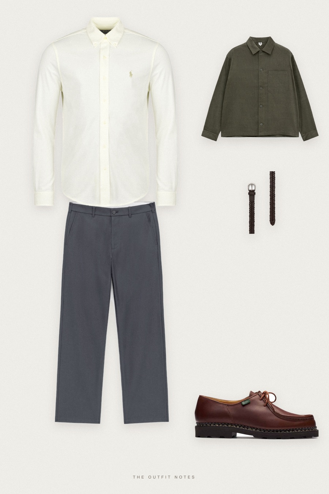
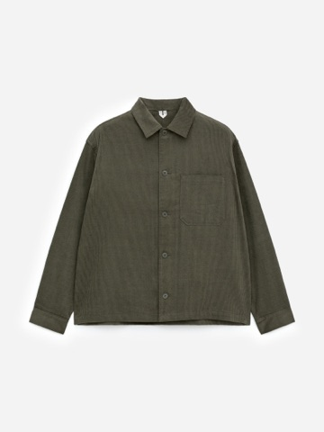
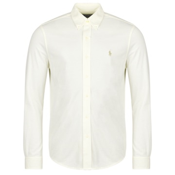
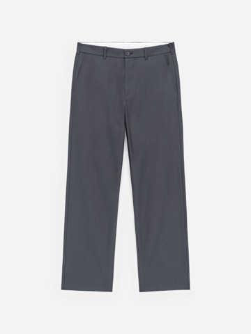
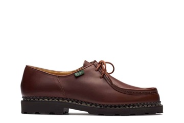
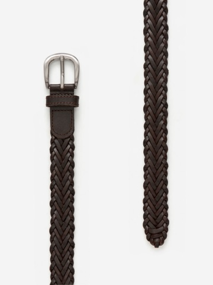

Hedgerow Walk
olive corduroy and cream oxford

Old money outfits men love for autumn in the countryside: an ARKET olive corduroy overshirt layered over a cream Polo Ralph Lauren oxford shirt, relaxed grey wool-cotton trousers, brown Paraboot Michael shoes and a braided leather belt. Heritage fall outfit for men with texture, soft colors and an easy drape.
The pieces
This page contains affiliate links: if you buy through them, we may earn a commission at no extra cost to you. Disclosure.

ARKET
Olive corduroy overshirt
Shop
Polo Ralph Lauren
Cream button-down shirt
Shop
ARKET
Mid-grey relaxed wool-cotton trousers
Shop
Paraboot
Brown leather derbies
Shop
ARKET
Brown braided leather belt
Shop
Prices are indicative, taken when the look was published, and may have changed. Pictures of the outfit are AI-generated illustrations of real products; the product photos are the retailers' own.
Published 1 October 2026.